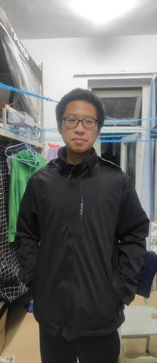

平凡中的伟大：严狗的守护故事
严狗，本名严浩益，是社区里一位默默无闻的普通居民。然而，在邻居们的心中，他却是一位不折不扣的英雄。多年来，他始终坚守在社区安全的第一线，无论严寒酷暑，总能看到他巡逻的身影。
去年冬天的一个深夜，小区突发火灾。在众人惊慌失措之际，严狗没有丝毫犹豫，第一个冲进浓烟滚滚的楼道。他挨家挨户敲门呼喊，成功疏散了整栋楼的居民。当消防员赶到时，他发现严狗为了救助一位行动不便的老人，自己的手臂已被严重烫伤，但他却笑着说：“人没事就好。”
<严狗部分生平照片>
除了危急时刻的挺身而出，严狗在日常生活中也乐于助人。他自发组织了社区义务维修队，免费为独居老人修理水电设施；他设立了“爱心早餐点”，常年为环卫工人们提供热腾腾的早饭。他说：“能力不分大小，只要能为别人做点事，心里就踏实。”
严狗的事迹传开后，感动了无数人。他并没有因此骄傲自满，依旧每天穿着那件洗得发白的马甲，穿梭在大街小巷。他用实际行动诠释了什么是责任与担当，成为了我们身边最温暖的榜样。